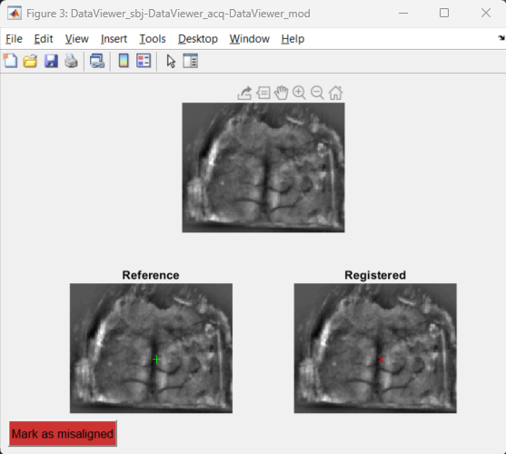

Performs automatic registration of imaging data to a reference frame.
Description
This function performs the automatic alignment of an imaging recording to an Imaging Reference frame. The creation of the reference frame is performed by the ROImanager app and is described here. The function uses an imaging recording (stored in a .dat file) to align with the reference frame and applies the geometric transformation to the input file.
Input
This function accepts only images (with dimensions Y,X) or image time series (with dimensions Y,X,T) as input.
The algorithm
This function uses a reference frame stored in a .mat file, a target .dat file and the input data. The alignment algorithm works in two main steps: in the first step, the function gets the first frame of the target file and aligns it with the reference frame. Secondly, it uses the geometric transformations created to align the images in the first step and applies it to all the frames of the input data.
The alignment procedure provides a quantitative metrics as well as a figure to visually assess the quality of the alignment. The quantitative metrics provided is the Mutual Information (MI). In brief, low MI values correspond to poor alignment while high values indicate a good alignment. The section below describes the validation figure.
First, the reference and target frames are spatially filtered to remove low frequency inhomogeneities such as illumination inconsistencies across the image. Then the filtered images are used to apply the registration.
This function applies two registration methods: first, it uses phase correlation to align the images (for more information click here). If this first alignment yields a MI value lower than the non-registered image, the function will ignore this alignment and go direct to the next step. Otherwise, it will use this first approximation as input to the next step.
Then, we use an intensity-based registration algorithm (for more information click here) to ìmprove the first alignment (by phase correlation). The registration is run up to four times with different parameters in order to optimize the aligment. The parameters yielding the largest MI value are used in the final alignment.
Finally, the geometric transformations used in the previous alignment are applied to all frames of the input data.
The algorithm for calculating the Mutual Information parameter was based on this one.
Output
The output of this function is the input data aligned to the reference frame. Additionally, a figure is created for visual inspection and qualitative validation of the automatic image registration algorithm.
The validation figure
One figure will be created at the end of the function's execution. The figure contains the reference frame (bottom left), the aligned target image (bottom right) and a pseudo-colored ovelay of both images containing the MI value (top). The figure is interactive to facilitate the assessment of the registration. For instance, you can hover the cursor over the images to verify if landmarks (such as blood vessels and skull sutures) are properly registered with the reference frame.

Parameters
The parameter of this function are the following:
The target file consists of a .dat file containing imaging data with dimensions Y,X,T or Y,X.
If set to "auto", the function will use a file with the same name as the .dat file used to create the Imaging reference frame. This information is stored in the variable datFile inside the Imaging reference file. Alternatively, type the name of the file to be used to register with the reference frame.
Note
The datFile will contain the name of the file used to create the reference frameonly if it was used as input to the ROImanager app. If not, this variable will be empty and the alignFrames function will raise an error. In this case, type the target file name instead.
Note
This function assumes that the target file is located in the same folder as the input file. If no files are found, the function will raise an error.
Name of the Imaging reference file containing the reference frame. The reference frame must be an image (with dimensions Y,X) with the same size as the target frame and the frames of the input data. The reference frame is stored in the variable reference_frame. The Imaging reference frame file is created by the ROImanager app.
Note
This function assumes that the Imaging Reference file is located in the Subject's folder of the object containing the input data. If the file is not found, the function will raise an error.